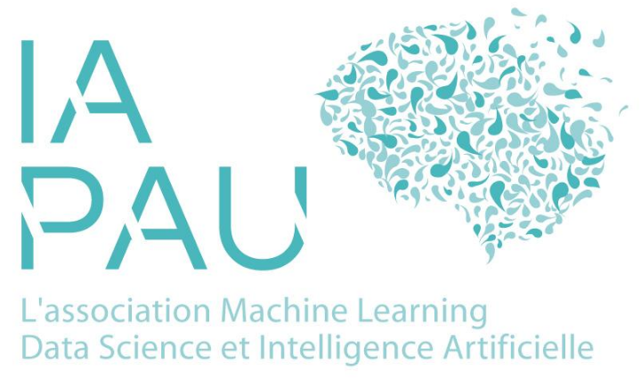

Cette année, le festival
IAPau7, qui aura lieu le vendredi 5 décembre à 10h30 à l'Universite de Pau, verra deux ateliers sur les conséquences sociale et environnementales de notre utilisation de l'IA.
Les conséquences environnementales et sociales de l'IA
Atelier IAPau 7 : Résistance au changement
Par
Aurore Darmandieu maître de conférence en management à l'UPPA (IAE),
L'IA qui arrive dans notre travail change nos habitudes, et il en résulte parfois des tensions qui peuvent dégénérer en conflit : sensation de perte de contrôle, de dépossession de son travail. Cet atelier est adressé à des managers et des dirigeants souhaitant analyser le pourquoi de ces résistances afin de mieux les anticiper. Il s'inspirera des récents travaux du labor IA (INRIA) sur ce sujet.
Atelier IAPau 7 : étude des conséquences de l'IA
Par
Paul Gay, Enseignant Chercheur en informatique à CY Tech
Dans la lignée des édition 2024 et 2025, et de la
conférence sur l'IA Frugale Verdinum, cet atelier vise à travailler notre anticipation des conséquences de l'IA.
Les ordres de grandeur des impacts directs à court terme seront rappelés, en termes d'énergie, d'eau et de consommation de ressources abiotiques. L'anticipation à plus long terme nous amènera à considérer les effets rebonds et indirects. Vers quel chemin socio-économique nous amène l'IA ? Ainsi, l'un des enjeux est la résilience de cette technologie dans un monde en changement et qui deviendra plus contraint. Le numérique est un macro-système complexe à produire, et nécessite des dizaines de matériaux différents ainsi que des processus industriels rassemblés dans une poignée d'usine à l'échelle mondiale. Dit autrement,
Dans 10 ans, combien coûtera un ordinateur? Pour définir une IA soutenable, nous nous appuierons sur la norme Afnor sur l'IA Frugale. Les conséquences sociales sur le marché du travail seront également abordé via les travaux du
laborIA, qui nous fourniront des pistes de réflexions pour éviter les résistances aux changements voire les conflits sociaux qui expliquent le taux d'échec important des projets d'IA dans les entreprises.
S'ensuivra ensuite un travail de réflexion sur des études de cas fournies par les participants de l'atelier. Afin de formaliser ces conséquences à long terme et les anticipations à actionner, nous utiliserons les méthodes de type arbres de conséquences et d'
archetypes rebound cards.
Plus généralement, cette session participera à la création d'un groupe de travail et d'améliorer notre réseau de connaissances pour traiter ces questions dans notre territoire.
Pour toute question, contactez-nous à contact@iapau.org.
Référent de l'organisation : Paul Gay. Ingénieur CNRS, et Vice Président IAPau
Rendez-vous le vendredi 6 décembre, pour une journée riche en échanges à
IAPau6